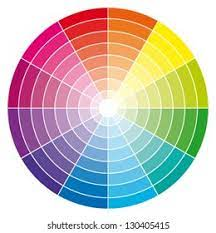
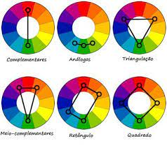

↓ É importante intendermos o desenho abaixo ↓


- Contraste: cores complementares
- Tons parecidos: cores análogas
- Mistura: cores triádicas
- Quatro: quadrado
- Degradê: monocromia
Classificações
As cores principais são:
(ambas abaixo são um triangulo no círculo)
As secundárias são:
(as terciárias são riscos entre uns e outros)
As terciárias são:
- Amarelo-esverdeado
- Amarelo-alaranjado
- Vermelho-alaranjado
- Vermelho-arroxeado
- Azul-arroxeado
- Azul-everdeado
Temperaturas
As cores frias são:
- Do roxo
- Ao amarelo-esverdeado
As cores quentes são:
- Do amarelo
- Ao vermelho-arroxeado